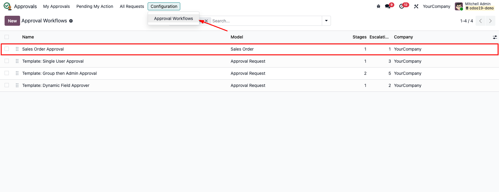
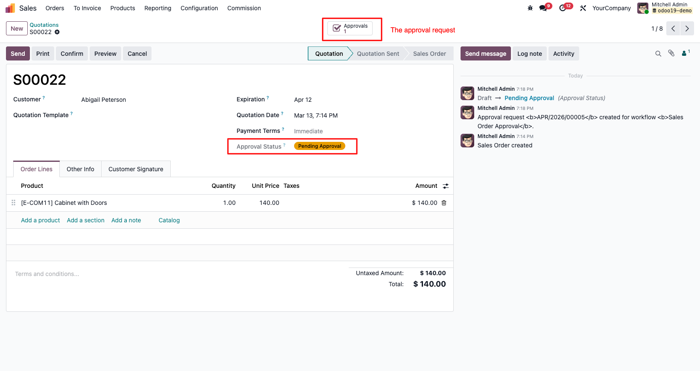
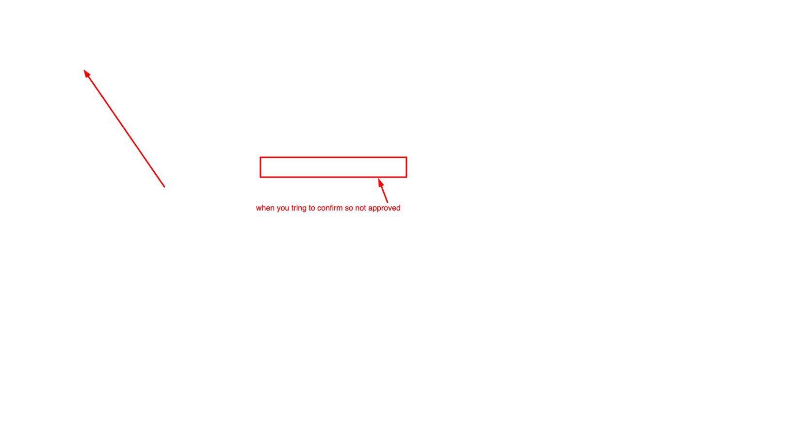
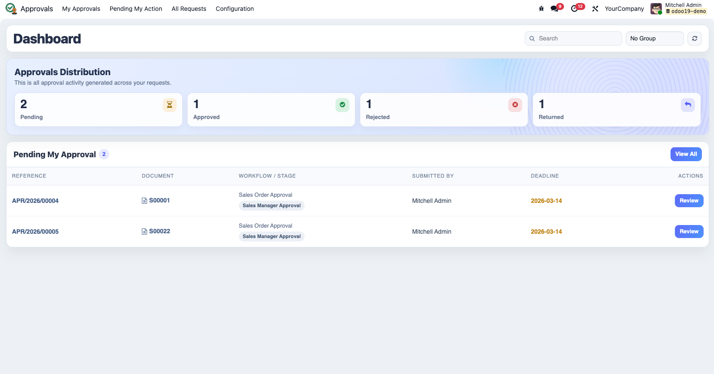
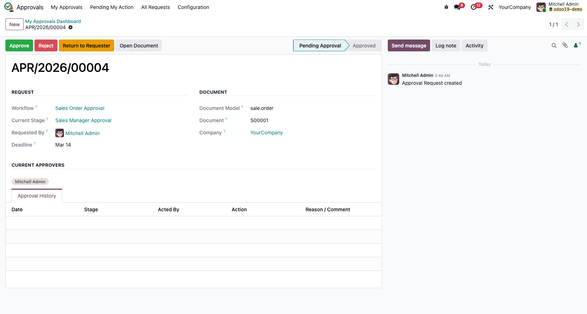
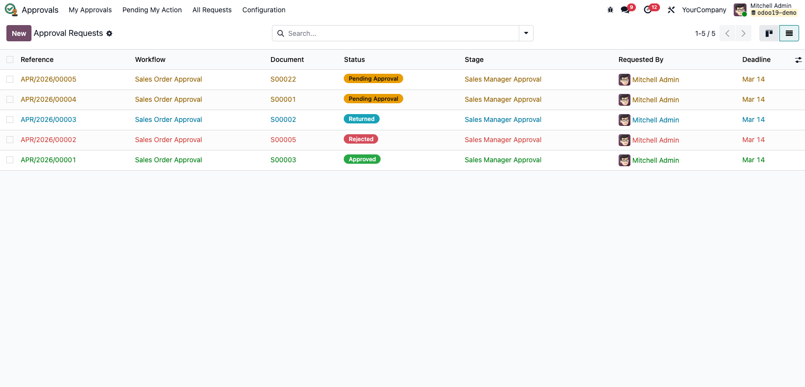

Mesin Workflow Persetujuan Dinamis
Mesin persetujuan multi-tahap yang dapat dikonfigurasi dan digunakan kembali untuk model Odoo apa pun.
Konfigurasikan sekali, terapkan di mana saja, dan simpan jejak audit lengkap secara otomatis.
Odoo 19
Community & Enterprise
Tanpa Coding per Model
∞
Model Didukung
Gunakan satu mesin persetujuan untuk model Odoo mana pun.
3
Tipe Approver
User spesifik, grup keamanan, atau field dinamis.
100%
Audit Terjamin
Setiap keputusan dicatat lengkap dengan riwayat aksi.
0
Coding Per Model
Konfigurasi workflow lewat UI tanpa menulis logika manual.
Apa yang Dilakukan Modul Ini
Berhenti membangun logika persetujuan satu per satu untuk setiap modul. Tentukan rantai persetujuan Anda di UI,
dan biarkan mesin menangani pengiriman, routing, progres tahap, notifikasi, eskalasi,
dan riwayat persetujuan secara otomatis.
Workflow Multi-Tahap Berurutan
Konfigurasikan tahap tak terbatas per workflow. Tahap 2 tidak akan dimulai sampai Tahap 1 selesai.
Routing Berbasis Domain
Terapkan workflow berbeda untuk record yang berbeda pada model yang sama menggunakan domain standar Odoo.
Tiga Tipe Approver Fleksibel
Gunakan user spesifik, grup keamanan, atau field user dinamis langsung dari dokumen (misal: Manager Sales).
Jejak Audit Tidak Terbantahkan
Setiap persetujuan, penolakan, dan pengembalian dicatat dengan user, waktu, dan alasan.
Eskalasi dan Batas Waktu
Tandai request yang terlambat dan beri tahu kontak eskalasi melalui cron job yang dijadwalkan.
Dashboard Langsung (OWL)
Dashboard khusus memberikan visibilitas jelas bagi pengirim dan approver terhadap pekerjaan yang tertunda.
Cara Kerjanya
1. Konfigurasi Workflow
Pilih model target, tambahkan domain opsional, dan tentukan waktu eskalasi.
2. Tambahkan Tahap
Tentukan urutan dan tipe approver untuk setiap tahap dalam workflow.
3. Kirim Dokumen
Mesin membuat request approval, mengaktifkan tahap pertama, dan mengirimkan notifikasi.
4. Setujui atau Kembalikan
Approver bertindak dari dashboard atau form request, dan dokumen maju secara otomatis.
Siklus Hidup Status Dokumen
Setiap dokumen bergerak melalui siklus persetujuan yang jelas, dari pengiriman awal hingga keputusan akhir.
Menunggu Persetujuan
Tertunda
Dikembalikan
Butuh Update
Draft: Dokumen dapat dikirim untuk persetujuan.
Menunggu Persetujuan: Memblokir konfirmasi sampai approver bertindak.
Disetujui: Dokumen dapat dilanjutkan ke tahap berikutnya.
Ditolak: Dokumen diblokir secara permanen.
Dikembalikan: Dokumen dapat diedit dan dikirim ulang.
Demo dalam Aplikasi
Berikut adalah panduan lengkap dari konfigurasi hingga persetujuan menggunakan tangkapan layar dari lingkungan Odoo 19.
Fase 1. Setup dan Konfigurasi
1. Berikan Hak Akses User

Tentukan Approval Manager atau Approval User sebelum menggunakan modul.
2. Buka Aplikasi Approvals

Aplikasi tersedia setelah instalasi untuk user dengan peran yang sesuai.
3. Konfigurasi Workflow

Buat workflow untuk model apa pun tanpa menulis kode per model.
4. Detail Konfigurasi Tahap

Tinjau model, domain, hari eskalasi, dan rantai tahap dalam satu form.
Fase 2. Pengiriman Dokumen
5. Kirim Sales Order untuk Approval

Tombol "Submit for Approval" muncul saat dokumen masih dalam status draft.
6. Status Sekarang: Menunggu Persetujuan

Badge status berubah dan request approval terkait dibuat secara otomatis.
7. Konfirmasi Diblokir Sebelum Disetujui

Mesin mencegah konfirmasi selama request masih menunggu tindakan approver.
Fase 3. Dashboard dan Keputusan
8. Dashboard My Approvals

Approver dapat memfilter, meninjau, dan bertindak dari satu tempat terpusat.
9. Tinjau dan Ambil Tindakan

Setujui, Tolak, atau Kembalikan dengan konteks lengkap dan riwayat audit.
Fase 4. Audit Trail Lengkap
10. Semua Riwayat Request

Manager dapat meninjau siklus hidup lengkap di seluruh request dan status.
Tiga Cara Menentukan Approver
User Spesifik
Selalu arahkan tahap ke pengguna Odoo yang tetap.
Contoh: Persetujuan Direktur Keuangan
Grup Keamanan
Arahkan ke grup, mendukung tindakan oleh salah satu atau semua anggota.
Contoh: Grup Manajer Penjualan
Field Dinamis
Ambil approver dari field user yang ada pada dokumen itu sendiri.
Contoh: Salesperson atau Manajer Langsung dari Karyawan
Jejak Audit Lengkap
Setiap keputusan dicatat dengan tahap, approver, aksi, dan alasan.
Ini membuat modul sangat cocok untuk kontrol internal, kepatuhan, dan penanganan sengketa.
Dibuat untuk Setiap Tim
Sales Orders
Cegah konfirmasi pesanan sampai rantai persetujuan yang benar selesai.
Purchase Orders
Wajibkan persetujuan manajer dan keuangan sebelum konfirmasi pengadaan.
Pengeluaran Karyawan
Rute request secara dinamis berdasarkan struktur pelaporan karyawan.
Pengajuan Cuti
Gunakan kebijakan persetujuan berbeda berdasarkan tipe cuti atau departemen.
Manufacturing Orders
Wajibkan persetujuan operasional atau kualitas sebelum produksi dimulai.
Model Kustom
Aktifkan flow approval pada objek bisnis kustom dengan mixin yang dapat digunakan kembali.
Spesifikasi Teknis
| Versi Odoo | 19.0 |
|---|
| Versi Modul | 1.0.1 |
|---|
| Edisi | Community dan Enterprise |
|---|
| Lisensi | LGPL-3 |
|---|
| Dependensi | base, mail, base_automation, sale |
|---|
| Frontend | OWL (Dashboard Terintegrasi) |
|---|
| Multi-Company | Didukung Penuh |
|---|
| Data Demo | Tersedia |
|---|
| Author | Deni Labs |
|---|
Panduan Integrasi Developer
Model apa pun dapat bergabung ke sistem approval dengan mewarisi mixin, menambahkan dependensi,
menampilkan field approval di form, dan membuat konfigurasi workflow.
1. Tambahkan mixin ke model Anda
class MyModel(models.Model):
_name = "my.model"
_inherit = [
"approval.mixin",
"mail.thread",
"mail.activity.mixin",
]
2. Tambahkan dependensi di manifest
{
"depends": [
"dl_approval_flow",
"mail",
],
}
Siap Merapikan Proses Persetujuan Anda?
Instal sekali, konfigurasi dalam hitungan menit, dan gunakan satu mesin persetujuan untuk seluruh kebutuhan bisnis Anda.
Tanpa Logika Workflow Kustom per Model
Jejak Audit Lengkap
Dapat Digunakan Kembali
Deni Labs: Approval Flow v19.0.1.0.1 | LGPL-3 | by Deni Labs